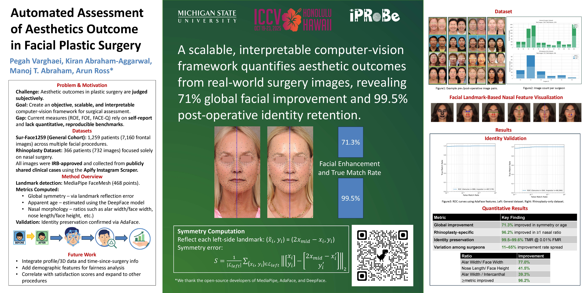
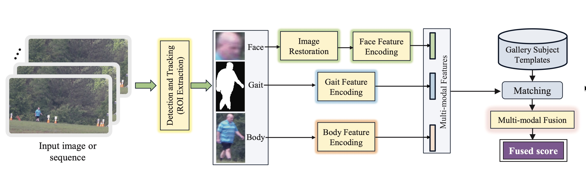
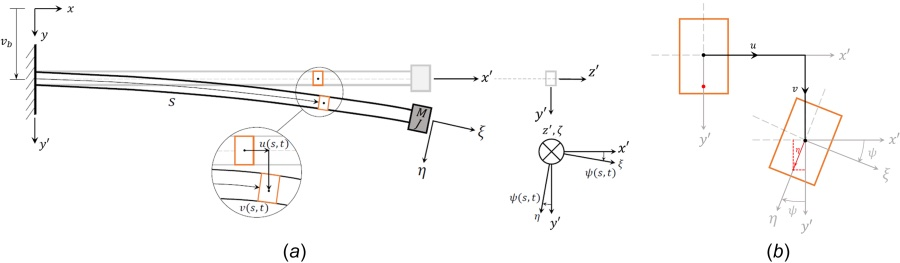

Publications in computer vision, biometrics, facial analysis, generative AI, and computational modeling. For citation counts and updates, see my Google Scholar profile.
Conference and journal papers.



Three first-author manuscripts are currently under peer review. Titles and details will be added upon publication.